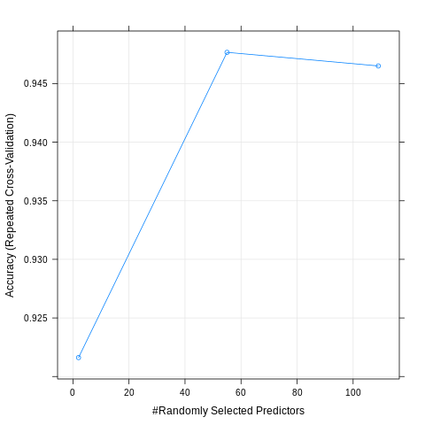
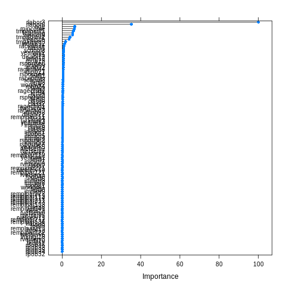

Predicting job search by training a random forest on an unbalanced dataset
February 11, 2018In this blog post, I am going to train a random forest on census data from the US to predict the probability that someone is looking for a job. To this end, I downloaded the US 1990 census data from the UCI Machine Learning Repository. Having a background in economics, I am always quite interested by such datasets. I downloaded the raw data which is around 820mb uncompressed. You can download it from this folder here.
Before training a random forest on it, some preprocessing is needed. First problem: the columns
in the data do not have names. Actually, training a random forest on unamed variables is possible,
but I like my columns to have names. The names are on a separate file, called USCensus1990raw.attributes.txt.
This is how this file looks like:
VAR: TYP: DES: LEN: CAT: VARIABLE/CATEGORY LABEL:
__________________________________________________________________________________
HISPANIC C X 3 Detailed Hispanic Origin Code See Append
000 Not Hispanic 006 199
001 Mexican, Mex Am 210 220
002 Puerto Rican 261 270
003 Cuban 271 274
004 Other Hispanic 200 209, 250 260, 290 401
VAR: TYP: DES: LEN: CAT: VARIABLE/CATEGORY LABEL:
__________________________________________________________________________________
HOUR89 C X 2 Usual Hrs. Worked Per Week Last Yr. 1989
00 N/a Less Than 16 Yrs. Old/did Not Work i
99 99 or More Usual Hrs.
VAR: TYP: DES: LEN: CAT: VARIABLE/CATEGORY LABEL:
__________________________________________________________________________________
HOURS C X 2 Hrs. Worked Last Week
00 N/a Less Than 16 Yrs. Old/not At Work/un
99 99 or More Hrs. Worked Last Week
VAR: TYP: DES: LEN: CAT: VARIABLE/CATEGORY LABEL:
__________________________________________________________________________________
IMMIGR C X 2 Yr. of Entry
00 Born in the U.S.
01 1987 to 1990
02 1985 to 1986
03 1982 to 1984
04 1980 or 1981
05 1975 to 1979
06 1970 to 1974
07 1965 to 1969
08 1960 to 1964
09 1950 to 1959
10 Before 1950The variable names are always written in upper case and sometimes end with some numbers. Regular expressions will help extract these column names:
library(tidyverse)
census_raw = import("USCensus1990raw.data.txt")
attributes_raw = readLines("USCensus1990raw.attributes.txt")
column_names = str_extract_all(attributes_raw, "^[A-Z]+(\\d{1,}|[A-Z])\\s+") %>%
flatten %>%
str_trim %>%
tolowerUsing readLines I load this text file into R. Then with stringr::str_extract_all, I can extract
the variable names from this text file. The regular expression, ^[A-Z]+(\\d{1,}|[A-Z])\\s+ can
seem complicated, but by breaking it up, it’ll be clear:
^[A-Z]+: matches one or more uppercase letter, at the beginning of the line (hence the^)\\d{1,}: matches one or more digits[A-Z]\\s+: matches one uppercase letter, followed by one or more spaces(\\d{1,}|[A-Z])\\s+: matches one or more digits OR (the|) matches one uppercase letter, followed by one or more spaces
This regular expression matches only the variable names. By using ^ I only limit myself to the
uppercase letters at the start of the line, which already removes a lot of unneeded lines from the
text. Then, by matching numbers or letters, followed by spaces, I avoid matching strings such as
VAR:. There’s probably a shorter way to write this regular expression, but since this one works,
I stopped looking for another solution.
Now that I have a vector called column_names, I can baptize the columns in my dataset:
colnames(census_raw) <- column_namesI also add a column called caseid to the dataset, but it’s actually not really needed. But it
made me look for and find rownames_to_column(), which can be useful:
census = census_raw %>%
rownames_to_column("caseid")Now I select the variables I need. I use dplyr::select() to select the columns I need (actually,
I will remove some of these later for the purposes of the blog post, but will continue exploring
them. Maybe write a part 2?):
census %<>%
select(caseid, age, citizen, class, disabl1, disabl2, lang1, looking, fertil, hour89, hours, immigr,
industry, means, occup, powpuma, powstate, pwgt1, race, ragechld, rearning,
relat1, relat2, remplpar, rlabor, rpincome, rpob, rspouse, rvetserv, school, sex, tmpabsnt,
travtime, week89, work89, worklwk, yearsch, yearwrk, yrsserv)Now, I convert factor variables to factors and only relevel the race variable:
census %<>%
mutate(race = case_when(race == 1 ~ "white",
race == 2 ~ "black",
!(race %in% c(1, 2)) ~ "other",
is.na(race) ~ NA_character_)) %>%
filter(looking != 0) %>%
mutate_at(vars(class, disabl1, disabl2, lang1, looking, fertil, immigr, industry, means,
occup, powstate, race, ragechld, remplpar, rlabor, rpob, rspouse,
rvetserv, school, sex, tmpabsnt, work89, worklwk, yearwrk),
as.factor) %>%
select(looking, age, class, disabl1, disabl2, lang1, fertil, immigr,
race, ragechld, remplpar, rlabor, rpob, rspouse,
rvetserv, school, sex, tmpabsnt, work89, worklwk, yearwrk, rpincome, rearning,
travtime, week89, work89, hours, yearsch, yrsserv) %>%
as_tibble
export(census, "regression_data.rds")So the variable I want to predict is looking which has 2 levels (I removed the level 0, which
stands for NA). I convert all the variables that are supposed to be factors into factors using
mutate_at() and then reselect a subsample of the columns. census is now a tibble with 39
columns and 2458285 rows. I will train the forest on a subsample only, because with cross validation
it would take forever on the whole dataset.
I run the training on another script, that I will then run using the Rscript command instead of
running it from Spacemacs (yes, I don’t use RStudio at home but Spacemacs + ESS). Here’s the script:
library(caret)
library(doParallel)
library(rio)
reg_data = import("regression_data.rds")janitor::tabyl(reg_data$looking)reg_data$looking n percent
1 1 75792 0.1089562
2 2 619827 0.891043890% of the individuals in the sample are not looking for a new job. For training purposes, I will only use 50000 observations instead of the whole sample. I’m already thinking about writing another blog post where I show how to use the whole data. But 50000 observations should be more than enough to have a pretty nice model. However, having 90% of observations belonging to a single class can cause problems with the model; the model might predict that everyone should belong to class 2 and in doing so, the model would be 90% accurate! Let’s ignore this for now, but later I am going to tackle this issue with a procedure calleds SMOTE.
set.seed(1234)
sample_df = sample_n(reg_data, 50000)Now, using caret::trainIndex(), I partition the data into a training sample and a testing
sample:
trainIndex = createDataPartition(sample_df$looking, p = 0.8,
list = FALSE,
times = 1)
train_data = sample_df[trainIndex, ]
test_data = sample_df[-trainIndex, ]I also save the testing data to disk, because when the training is done I’ll lose my R session (remember, I’ll run the training using Rscript):
saveRDS(test_data, "test_data.rds")Before training the model, I’ll change some options; I’ll do 5-fold cross validation that I repeat 5 times. This will further split the training set into training/testing sets which will increase my confidence in the metrics that I get from the training. This will ensure that the best model really is the best, and not a fluke resulting from the splitting of the data that I did beforehand. Then, I will test the best model on the testing data from above:
fitControl <- trainControl(
method = "repeatedcv",
number = 5,
repeats = 5)A very nice feature from the caret package is the possibility to make the training in parallel.
For this, load the doParallel package (which I did above), and then register the number of cores
you want to use for training with makeCluster(). You can replace detectCores() by the number of
cores you want to use:
cl = makeCluster(detectCores())
registerDoParallel(cl)Finally, we can train the model:
fit_caret = train(looking ~ .,
data = train_data,
trainControl = fitControl)Because it takes around 1 and a half hours to train, I save the model to disk using saveRDS():
saveRDS(fit_caret, "model_unbalanced.rds")The picture below shows all the cores from my computer running and RAM usage being around 20gb during the training process:

And this the results of training the random forest on the unbalanced data:
model_unbalanced = readRDS("model_unbalanced.rds")
test_data = readRDS("test_data.rds")
plot(model_unbalanced)
preds = predict.train(model_unbalanced, newdata = test_data)
confusionMatrix(preds, reference = test_data$looking)
Confusion Matrix and Statistics
Reference
Prediction 1 2
1 1287 112
2 253 12348
Accuracy : 0.9739
95% CI : (0.9712, 0.9765)
No Information Rate : 0.89
P-Value [Acc > NIR] : < 2.2e-16
Kappa : 0.8613
Mcnemar's Test P-Value : 2.337e-13
Sensitivity : 0.83571
Specificity : 0.99101
Pos Pred Value : 0.91994
Neg Pred Value : 0.97992
Prevalence : 0.11000
Detection Rate : 0.09193
Detection Prevalence : 0.09993
Balanced Accuracy : 0.91336
'Positive' Class : 1If someone really is looking for a job, the model is able to predict it correctly 92% of the times and 98% of the times if that person is not looking for a job. It’s slightly better than simply saying than no one is looking for a job, which would be right 90% of the times, but not great either.
To train to make the model more accurate in predicting class 1, I will resample the training set, but by
downsampling class 2 and upsampling class 1. This can be done with the function SMOTE() from the
{DMwR} package. However, the testing set should have the same distribution as the population,
so I should not apply SMOTE() to the testing set. I will resplit the data, but this time with a 95/5 % percent
split; this way I have 5% of the original dataset used for testing, I can use SMOTE() on the
95% remaining training set. Because SMOTEing takes some time, I save the SMOTEd training set
using readRDS() for later use:
reg_data = import("regression_data.rds")
set.seed(1234)
trainIndex = createDataPartition(reg_data$looking, p = 0.95,
list = FALSE,
times = 1)
test_data = reg_data[-trainIndex, ]
saveRDS(test_data, "test_smote.rds")
# Balance training set
train_data = reg_data[trainIndex, ]
train_smote = DMwR::SMOTE(looking ~ ., train_data, perc.over = 100, perc.under=200)
saveRDS(train_smote, "train_smote.rds")The testing set has 34780 observations and below you can see the distribution of the target variable,
looking:
janitor::tabyl(test_data$looking)
test_data$looking n percent
1 1 3789 0.1089419
2 2 30991 0.8910581Here are the results:
model_smote = readRDS("model_smote.rds")
test_smote = readRDS("test_smote.rds")
plot(model_smote)
preds = predict.train(model_smote, newdata = test_smote)
confusionMatrix(preds, reference = test_smote$looking)Confusion Matrix and Statistics
Reference
Prediction 1 2
1 3328 1142
2 461 29849
Accuracy : 0.9539
95% CI : (0.9517, 0.9561)
No Information Rate : 0.8911
P-Value [Acc > NIR] : < 2.2e-16
Kappa : 0.78
Mcnemar's Test P-Value : < 2.2e-16
Sensitivity : 0.87833
Specificity : 0.96315
Pos Pred Value : 0.74452
Neg Pred Value : 0.98479
Prevalence : 0.10894
Detection Rate : 0.09569
Detection Prevalence : 0.12852
Balanced Accuracy : 0.92074
'Positive' Class : 1
The balanced accuracy is higher, but unlike what I expected (and hoped), this model is worse in
predicting class 1! I will be trying one last thing; since I have a lot of data at my disposal,
I will simply sample 25000 observations where the target variable looking equals 1, and then sample
another 25000 observations where the target variable equals 2 (without using SMOTE()). Then I’ll
simply bind the rows and train the model on that:
reg_data = import("regression_data.rds")
set.seed(1234)
trainIndex = createDataPartition(reg_data$looking, p = 0.95,
list = FALSE,
times = 1)
test_data = reg_data[-trainIndex, ]
saveRDS(test_data, "test_up_down.rds")
# Balance training set
train_data = reg_data[trainIndex, ]
train_data1 = train_data %>%
filter(looking == 1)
set.seed(1234)
train_data1 = sample_n(train_data1, 25000)
train_data2 = train_data %>%
filter(looking == 2)
set.seed(1234)
train_data2 = sample_n(train_data2, 25000)
train_up_down = bind_rows(train_data1, train_data2)
fitControl <- trainControl(
method = "repeatedcv",
number = 5,
repeats = 5)
cl = makeCluster(detectCores())
registerDoParallel(cl)
fit_caret = train(looking ~ .,
data = train_up_down,
trControl = fitControl,
preProcess = c("center", "scale"))
saveRDS(fit_caret, "model_up_down.rds")And here are the results:
model_up_down = readRDS("model_up_down.rds")
test_up_down = readRDS("test_up_down.rds")
plot(model_up_down)
preds = predict.train(model_up_down, newdata = test_up_down)
confusionMatrix(preds, reference = test_up_down$looking)Confusion Matrix and Statistics
Reference
Prediction 1 2
1 3403 1629
2 386 29362
Accuracy : 0.9421
95% CI : (0.9396, 0.9445)
No Information Rate : 0.8911
P-Value [Acc > NIR] : < 2.2e-16
Kappa : 0.7391
Mcnemar's Test P-Value : < 2.2e-16
Sensitivity : 0.89813
Specificity : 0.94744
Pos Pred Value : 0.67627
Neg Pred Value : 0.98702
Prevalence : 0.10894
Detection Rate : 0.09784
Detection Prevalence : 0.14468
Balanced Accuracy : 0.92278
'Positive' Class : 1Looks like it’s not much better than using SMOTE()!
There are several ways I could achieve better predictions; tuning the model is one possibility, or perhaps going with another type of model altogether. I will certainly come back to this dataset in future blog posts!
Using the best model, let’s take a look at which variables are the most important for predicting job search:
> varImp(model_unbalanced)
rf variable importance
only 20 most important variables shown (out of 109)
Overall
rlabor3 100.0000
rlabor6 35.2702
age 6.3758
rpincome 6.2964
tmpabsnt1 5.8047
rearning 5.3560
week89 5.2863
tmpabsnt2 4.0195
yearsch 3.4892
tmpabsnt3 1.7434
work892 1.3231
racewhite 0.9002
class1 0.7866
school2 0.7117
yearwrk2 0.6970
sex1 0.6955
disabl12 0.6809
lang12 0.6619
rpob23 0.6507
rspouse6 0.6330It’s also possible to have a plot of the above:
plot(varImp(model_unbalanced))
To make sense of this, we have to read the description of the features here.
rlabor3 is the most important variable, and means that the individual is unemployed. rlabor6
means not in the labour force. Then the age of the individual as well as the individual’s income
play a role. tmpabsnt is a variable that equals 1 if the individual is temporary absent from work,
due to a layoff. All these variables having an influence on the probability of looking
for a job make sense, but looks like a very simple model focusing on just a couple of variables
would make as good a job as the random forest.
If you found this blog post useful, you might want to follow me on twitter for blog post updates.